La piel. Las formas de vida son parte de la propia vida.
“Su cuerpo esta cubierto por ropa gastada y sucia. Sus manos y su cara están desnudas. La suciedad que lo envuelve ya forma parte de su piel, que se transformó para adaptarse a la intemperie. La piel cubre totalmente nuestro cuerpo: nos impermeabiliza, nos protege de los golpes, regula la temperatura corporal. Dado que nos permite sentir numerosas sensaciones, juega un papel esencial en la comunicación, la afectividad y el placer. Una de sus características singulares es su olor. En ocasiones nos alejamos de algunas personas por el olor que emanan. ¿cuál es el olor que aceptamos?¿cuál es el olor que nos invita a acercarnos y cuál el que nos aleja? Cuando alguna de las personas que viven en la calle llega a un hospital, el personal que lo asiste conocen los riesgos que ocasionaría su limpieza profunda, pues el agua y el jabón arrasarían no solo con la suciedad sino también con la piel. La piel se apropia de la suciedad. Ya no es suciedad, ahora es piel reforzada, endurecida; bello y paradigmático ejemplo de esa unidad de la que hablamos con frecuencia:el hombre y su entorno, en una producción recíproca, multidimensional y al mismo tiempo singular.”
Olga Idone, hombres en la calle


 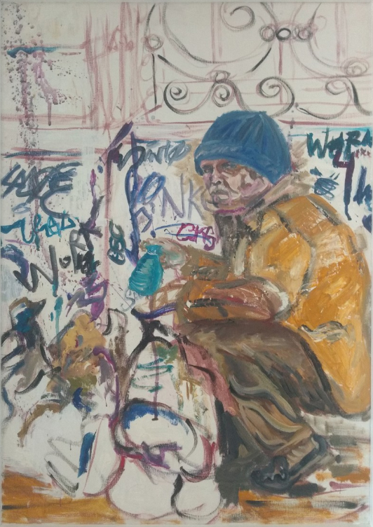
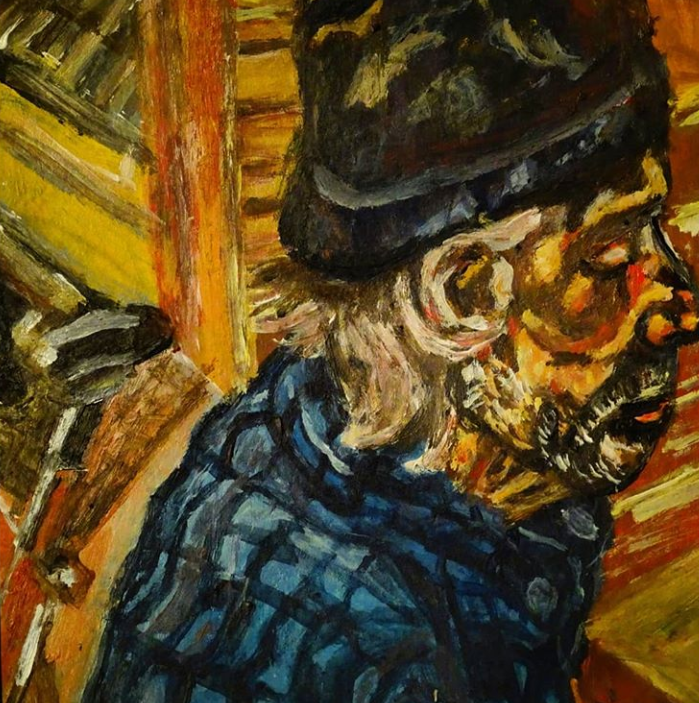
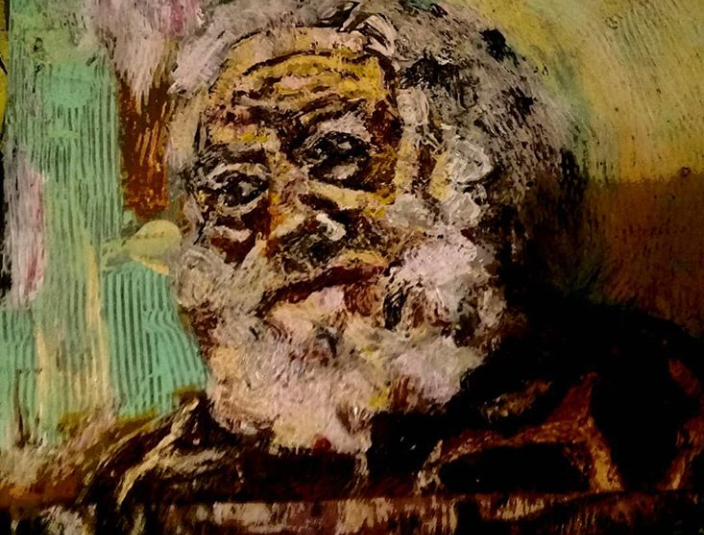
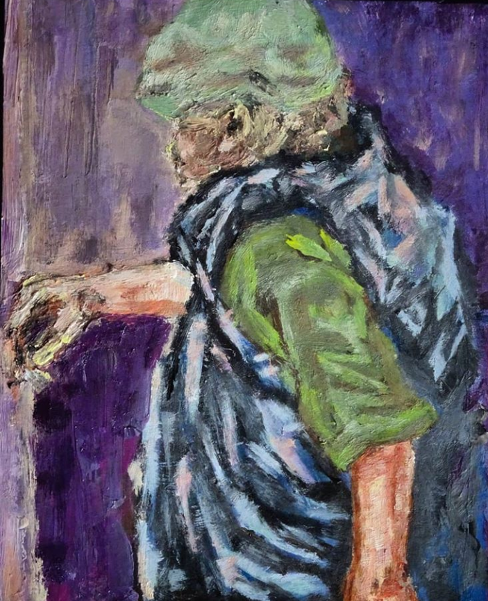
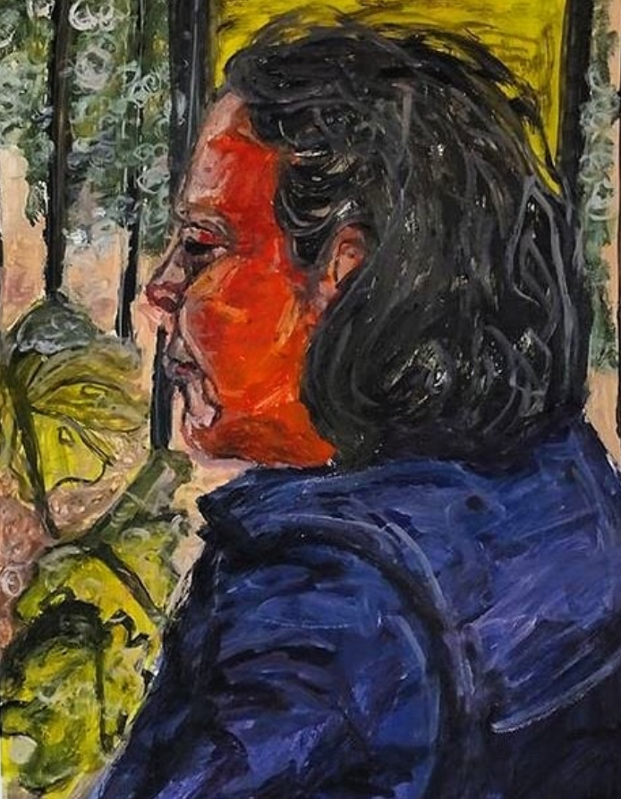
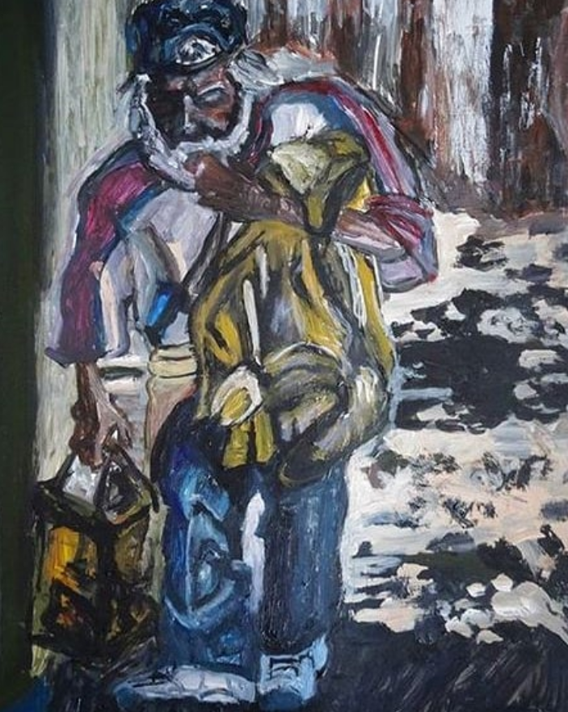
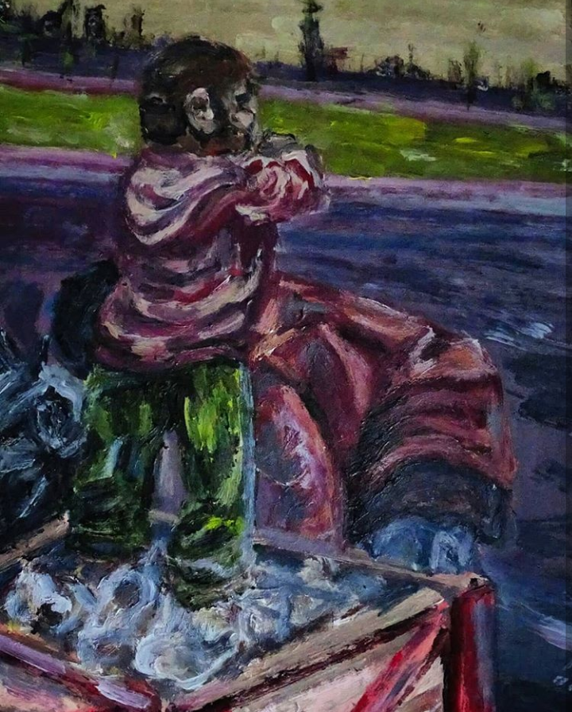
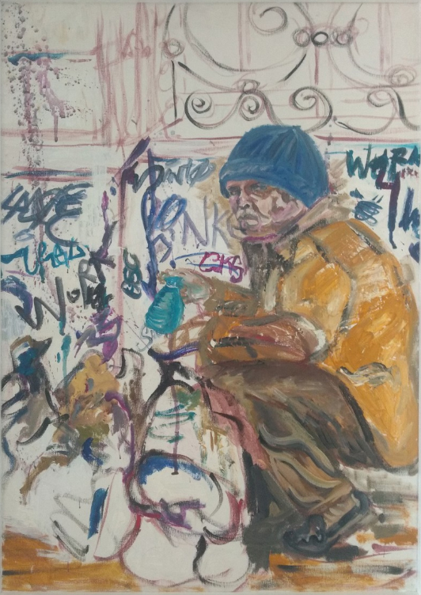
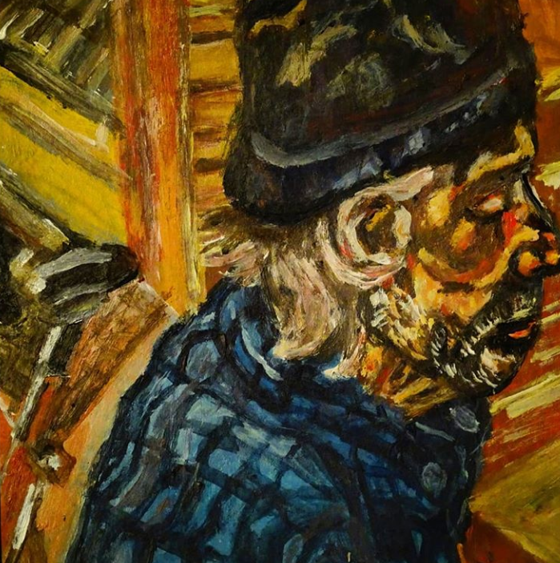
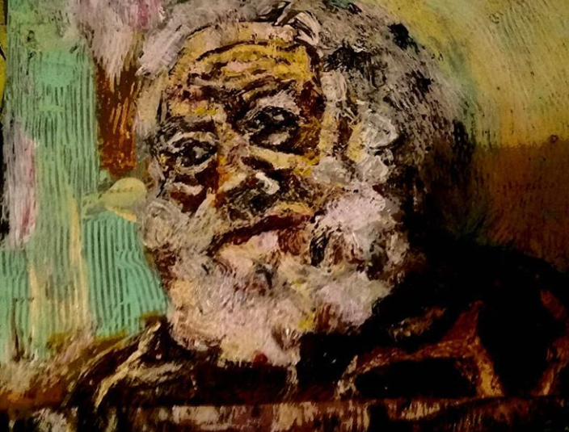
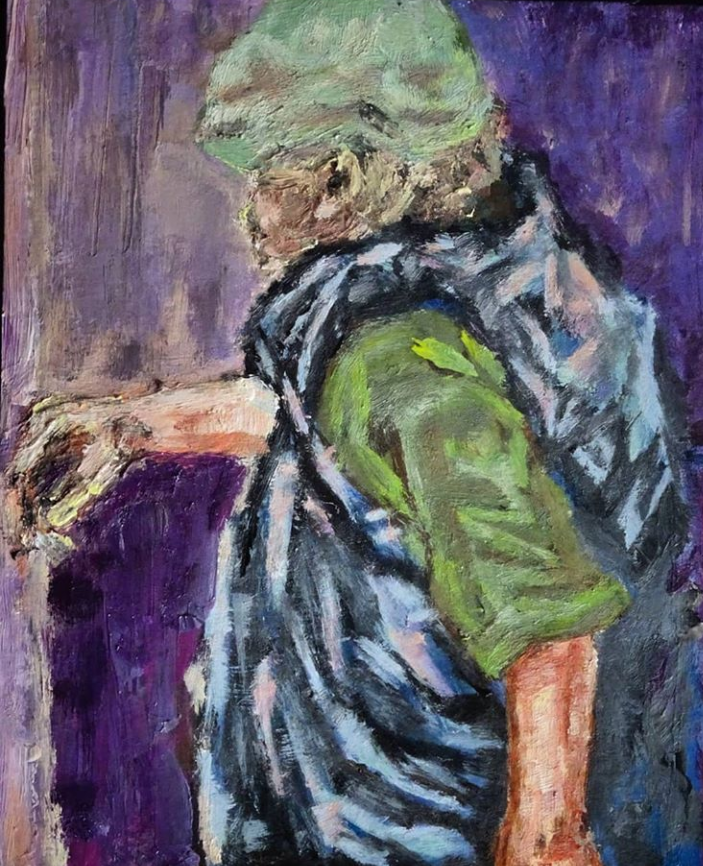
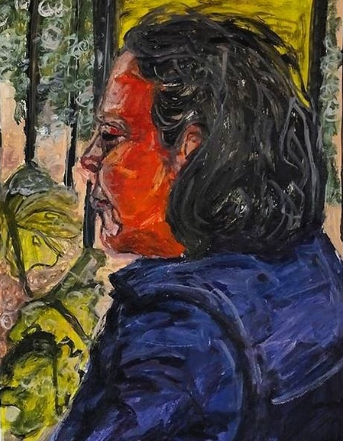
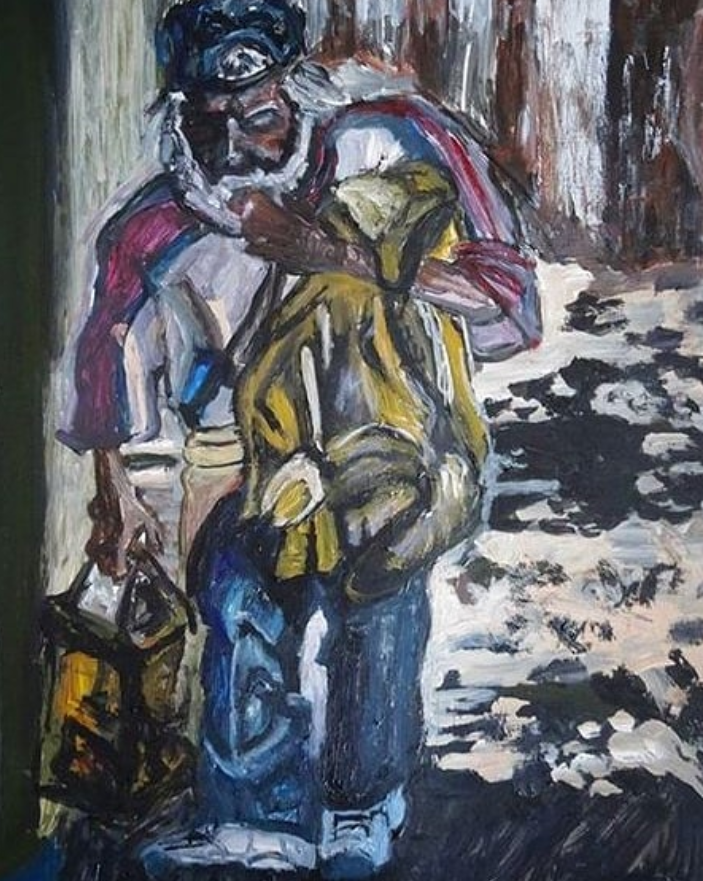
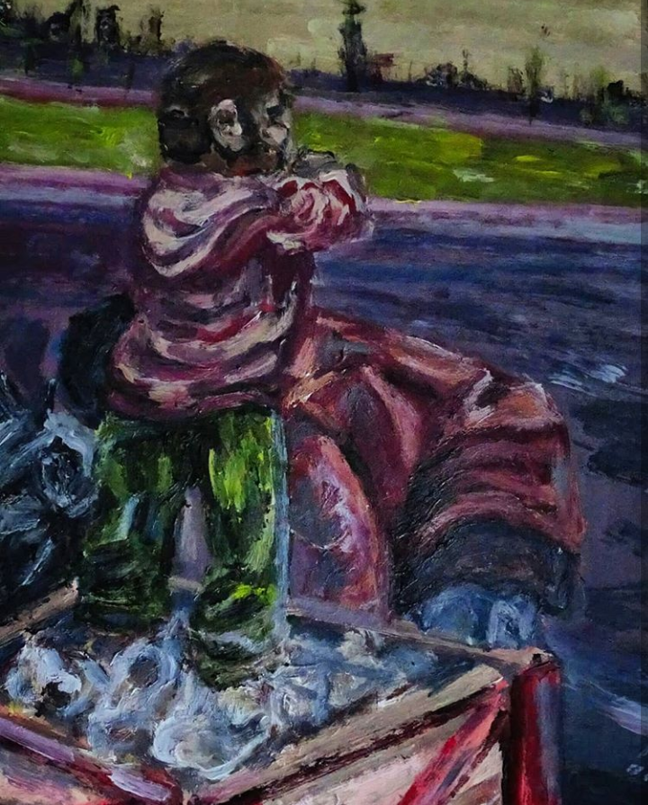